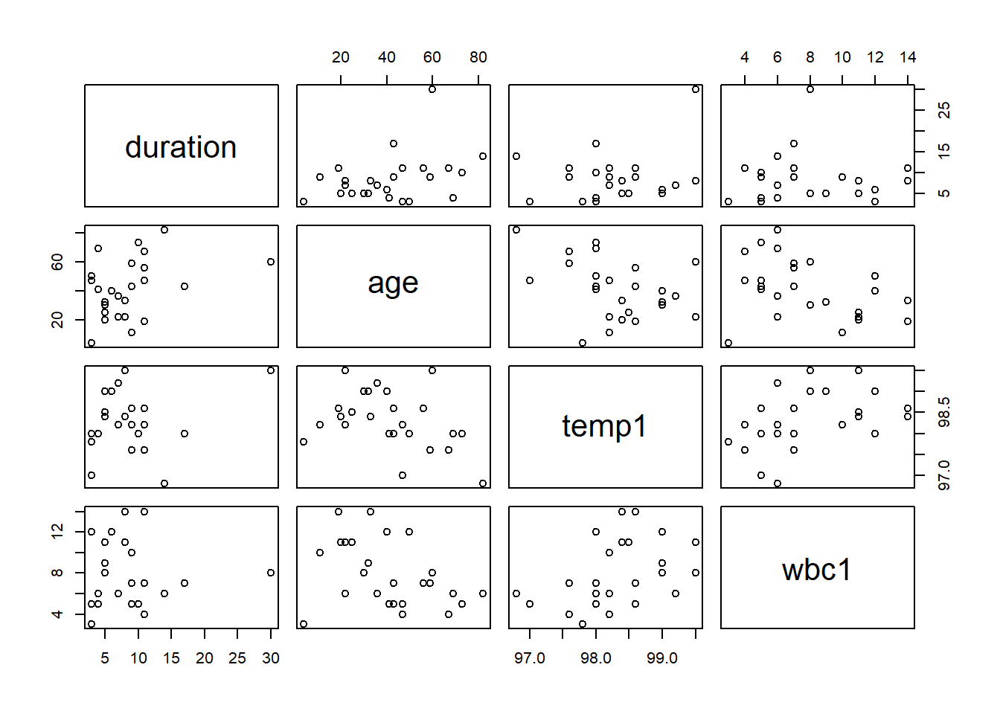
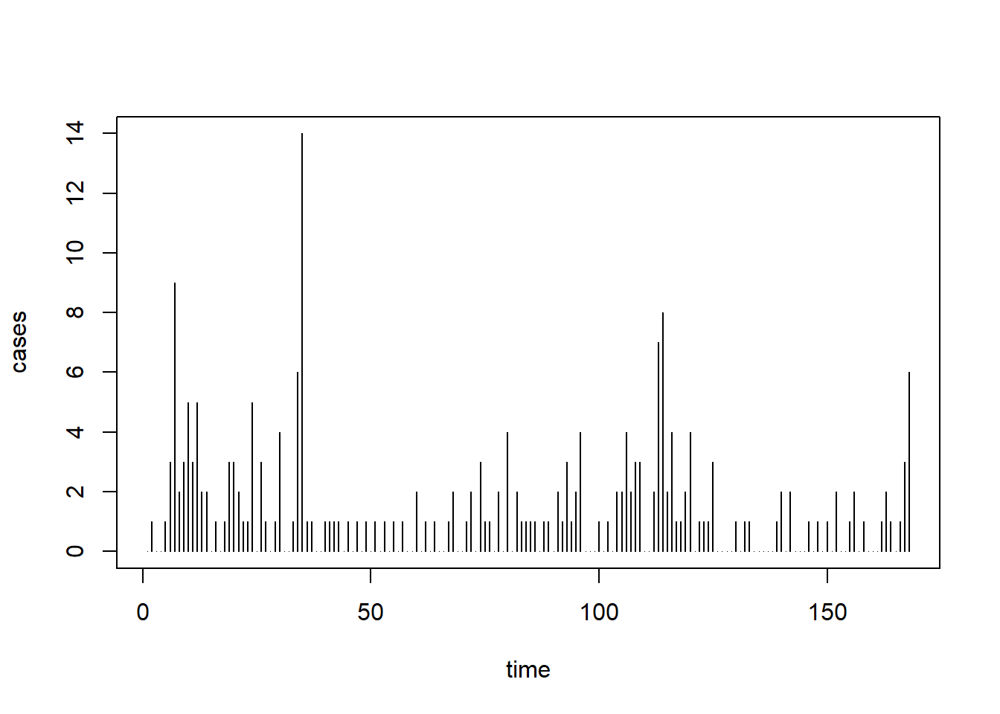

Chapter 5 Quasi-Likelihood methods
5.1 Dispersion
Recall the exponential dispersion family
\[ P(y_i|\theta_i, \phi_i)= \exp\left\{\frac{y_i\theta_i-b(\theta_i)}{\phi_i}+c(y_i, \phi_i)\right\}. \]
Assume grouping has been taken care of, that is \(\phi_i=\phi/m_i\) and so
\[ P(y_i|\theta_i, \phi)= \exp\left\{ \frac{y_i\theta_i-b(\theta_i)}{\phi}+c(y_i, \phi, m_i)\right\}. \] Basic property (directly from GLM theory, see Section 6.2.2):
\[ \mbox{Var}(y_i|\theta_i, \phi_i)= \phi_i\mathcal{V}(\mu_i)= \phi\mathcal{V}(\mu_i)/m_i \] So, dispersion \(\phi\) scales the variance but does but does not affect \(E(y_i| \theta_i,\phi_i)=\mu_i=h(\boldsymbol{x}_i^T\boldsymbol{\beta})\).
We know that the function \(\mathcal{V}(\mu)\) is characteristic for the response distribution at play:
| \(Y\) | \(\mathcal{V}(\mu)\) | \(\phi\) |
|---|---|---|
| \(N(\mu, \sigma^2)\) | \(1\) | \(\sigma^2\) |
| \(\mbox{Bernoulli}(p)\) | \(p(1-p)\) | \(1\) |
| \(\mbox{Poisson}(\mu)\) | \(\mu\) | \(1\) |
| \(\mbox{Gamma}(\mu, \nu)\) | \(\mu^2\) | \(1/\nu\) |
| \(IG(\mu, \sigma^2)\) | \(\mu^3\) | \(\sigma^2\) |
What is then the relevance of dispersion?
For estimation of \(\boldsymbol{\beta}\), we note from (8.17)
\[ S(\boldsymbol{\beta})= \frac{1}{\phi}\sum_{i=1}^n m_i \left\{...\right\} \stackrel{!}{=}0 \]
that is \(\phi\) cancels out when setting the score-function to 0. Hence, dispersion is irrelevant for the estimation of \(\boldsymbol{\beta}\).
But for the variance of \(\hat{\boldsymbol{\beta}}\) we have \[ \mbox{Var}(\hat{\boldsymbol{\beta}})= F_{(\phi)}^{-1}(\hat{\boldsymbol{\beta}}) )= \left[ \frac{1}{\phi}\sum_{i=1}^{n} m_i \left\{\ldots\right\}\right]^{-1} = \phi F_{(\phi=1)}^{-1}(\hat{\boldsymbol{\beta}}) \] where \(F_{(\phi)}(\cdot)\) is the (expected) Fisher information when using dispersion \(\phi\).
This result implies that a dispersion of \(\phi\) will inflate all standard errors, \(SE(\hat{\beta}_j)\), by the factor \(\sqrt{\phi}\) (when compared to using \(\phi=1\)).
Estimation of dispersion can be motivated through goodness-of-fit statistics (see also Sec 8.6):
- via Pearson goodness-of-fit statistic \(\chi^2_P= \sum_{i=1}^nm_i\frac{(y_i-\hat{\mu}_i)^2}{\mathcal{V}(\hat{\mu}_i)}\): \[ \begin{aligned} \chi^2_P \stackrel{a}{\sim} \phi \chi^2(n-p)\\ E(\chi^2_P)= \phi \times (n-p) \end{aligned} \] suggesting \[ \hat{\phi}_{\mbox{Pearson}}= \frac{1}{n-p} \chi^2_P \]
- via Deviance, \(D(\boldsymbol{Y}, \hat{\boldsymbol{\mu}}) =2\phi(\ell_{sat}-\ell(\hat{\boldsymbol{\beta}}))\): \[ \begin{aligned} D(\boldsymbol{Y}, \hat{\boldsymbol{\mu}})\stackrel{a}{\sim} \phi \chi^2(n-p)\\ E(D(\boldsymbol{Y}, \hat{\boldsymbol{\mu}}))= \phi \times (n-p) \end{aligned} \] suggesting \[ \hat{\phi}_{\mbox{dev}}= \frac{D(\boldsymbol{Y}, \hat{\boldsymbol{\mu}})}{n-p} \] The notation \(a\) in the distributional expressions highlights that these are just approximations. For the deviance, we know that the approximation can be very poor! Therefore the deviance-based estimate is sometimes called the “quick-and-dirty” dispersion estimate.
5.1.1 Example 5.1 (Hospital stay data)

##
## Call:
## glm(formula = duration ~ age + temp1, family = Gamma(link = log),
## data = hosp)
##
## Coefficients:
## Estimate Std. Error t value Pr(>|t|)
## (Intercept) -28.654096 16.621018 -1.724 0.0987 .
## age 0.014900 0.005698 2.615 0.0158 *
## temp1 0.306624 0.168141 1.824 0.0818 .
## ---
## Signif. codes: 0 '***' 0.001 '**' 0.01 '*' 0.05 '.' 0.1 ' ' 1
##
## (Dispersion parameter for Gamma family taken to be 0.2690233)
##
## Null deviance: 8.1722 on 24 degrees of freedom
## Residual deviance: 5.7849 on 22 degrees of freedom
## AIC: 142.73
##
## Number of Fisher Scoring iterations: 6Dispersion estimate (Pearson):
hosp.disp <- 1/(hosp.glm$df.res)*sum( (hosp$duration-hosp.glm$fitted)^2/(hosp.glm$fitted^2))
hosp.disp## [1] 0.2690233Dispersion estimate (Deviance):
## [1] 0.2629518## (Intercept) age temp1
## (Intercept) 1026.8932335 -0.1386065114 -10.387121099
## age -0.1386065 0.0001206901 0.001359292
## temp1 -10.3871211 0.0013592917 0.105088741## (Intercept) age temp1
## 16.62101763 0.00569811 0.16814078## (Intercept) age temp1
## 16.62101763 0.00569811 0.168140785.2 Overdispersion
Recall, for the Poisson model, one has \(\phi=1\), i.e.
\[ \mbox{Var}(y_i|\theta_i)=1 \times \mathcal{V}(\mu_i)=\mathcal{V}(\mu_i)=\mu_i=E(y_i|\theta_i) \] i.e.
\[ \frac{\mbox{Var}(y_i|\theta_i)}{E(y_i|\theta_i)}=1, \] a property referred to as “equidispersion”.
5.2.1 Example 5.2 (US Polio data)
require(gamlss.data)
data(polio)
uspolio <- as.data.frame( matrix( c( 1:168, t( polio ) ), ncol = 2 ) )
colnames( uspolio ) <- c("time", "cases")
plot( uspolio, type = "h" )
Simple linear model:
polio.glm <- glm( cases ~ time, family = poisson( link = log ), data = uspolio )
summary( polio.glm )##
## Call:
## glm(formula = cases ~ time, family = poisson(link = log), data = uspolio)
##
## Coefficients:
## Estimate Std. Error z value Pr(>|z|)
## (Intercept) 0.626639 0.123641 5.068 4.02e-07 ***
## time -0.004263 0.001395 -3.055 0.00225 **
## ---
## Signif. codes: 0 '***' 0.001 '**' 0.01 '*' 0.05 '.' 0.1 ' ' 1
##
## (Dispersion parameter for poisson family taken to be 1)
##
## Null deviance: 343.00 on 167 degrees of freedom
## Residual deviance: 333.55 on 166 degrees of freedom
## AIC: 594.59
##
## Number of Fisher Scoring iterations: 5Look at the summary; we see \(\phi=1\). But let’s get a quick dispersion estimate:
## [1] 2.009337Now with seasonal model (annual and semi-annual cycles):
polio2.glm <- glm(cases~time + I(cos(2*pi*time/12)) + I(sin(2*pi*time/12))
+ I(cos(2*pi*time/6)) + I(sin(2*pi*time/6)), family=poisson(link=log),
data=uspolio)
summary(polio2.glm)##
## Call:
## glm(formula = cases ~ time + I(cos(2 * pi * time/12)) + I(sin(2 *
## pi * time/12)) + I(cos(2 * pi * time/6)) + I(sin(2 * pi *
## time/6)), family = poisson(link = log), data = uspolio)
##
## Coefficients:
## Estimate Std. Error z value Pr(>|z|)
## (Intercept) 0.557241 0.127303 4.377 1.20e-05 ***
## time -0.004799 0.001403 -3.421 0.000625 ***
## I(cos(2 * pi * time/12)) 0.137132 0.089479 1.533 0.125384
## I(sin(2 * pi * time/12)) -0.534985 0.115476 -4.633 3.61e-06 ***
## I(cos(2 * pi * time/6)) 0.458797 0.101467 4.522 6.14e-06 ***
## I(sin(2 * pi * time/6)) -0.069627 0.098123 -0.710 0.477957
## ---
## Signif. codes: 0 '***' 0.001 '**' 0.01 '*' 0.05 '.' 0.1 ' ' 1
##
## (Dispersion parameter for poisson family taken to be 1)
##
## Null deviance: 343.00 on 167 degrees of freedom
## Residual deviance: 288.85 on 162 degrees of freedom
## AIC: 557.9
##
## Number of Fisher Scoring iterations: 5## [1] 1.78179We see that the dispersion reduces when improving the fit of the model, but it is unlikely to `disappear’ fully.
In the exammple above there is overdispersion, i.e. more dispersion in the data than supported by the assumption \(\phi=1\).
Overdispersion can arise for all one-parameter exponential family distributions (Poisson, Bernoulli/Binomial,…).
Possible reasons for overdispersion can include:
- Model misspecification (such as omitted covariates)
- latent clusters/subpopulations in the data (“unobserved heterogeneity”)
What is the impact of overdispersion?
- There is no impact on \(\hat{\beta}\).
- The standard error, \(SE(\hat{\beta}_j)\), when estimated using \(\phi=1\), is underestimated by the factor \(\sqrt{\phi}\) (with \(\phi\) denoting the “true” \(\phi\).).
As a consequence,
- confidence intervals will be too small;
- p-values will be too small;
- hence, significances overstated and potentially wrong decisions.
Fortunately, there is a simple remedy to this problem:
- Fit a Poisson or Bernoulli/Binomial model as usual
- Estimate \(\phi\) as discussed above, yielding \(\hat{\phi}\).
- Multiply all standard errors by \(\sqrt{\hat{\phi}}\).
De facto, this amounts to the model
\[ \begin{aligned} \mu_i = h(\boldsymbol{x}_i^T\boldsymbol{\beta})\\ \mbox{Var}(y_i)= \phi\mathcal{V}(\mu_i) \end{aligned} \]
with “quasi-score function” (of which clearly \(\phi\) cancels out)
\[ S(\boldsymbol{\beta})= \sum_{i=1}^n m_i \boldsymbol{x}_i \frac{y_i-\mu_i}{\phi\mathcal{V}(\mu_i)}h^{\prime}(\boldsymbol{x}_i^T\boldsymbol{\beta})\stackrel{!}{=}0 \]
and variance estimate
\[ \hat{\text{Var}}(\hat{\boldsymbol{\beta}}) = \hat{\phi}F^{-1}(\hat{\boldsymbol{\beta}}) \] Note that doing all this requires no actual distributional assumption (and there could also not be any: The `Poisson’-type EDF with \(\phi>1\) is not a valid pdf!)
Estimation methods using quasi-score functions are also referred to as quasi-likelihood methods.
5.2.2 Example 5.3 (US Polio data)
Let us firstly produce the Pearson-type dispersion estimates.
polio.phi <- 1/(polio.glm$df.res)*sum( (uspolio$cases-polio.glm$fitted)^2/(polio.glm$fitted))
polio.phi## [1] 2.481818polio2.phi <- 1/(polio2.glm$df.res)*sum( (uspolio$cases-polio2.glm$fitted)^2/(polio2.glm$fitted))
polio2.phi## [1] 1.967417Then adjust the standard errors:
## (Intercept) time
## 0.194781773 0.002198181## (Intercept) time I(cos(2 * pi * time/12))
## 0.178560577 0.001967754 0.125507133
## I(sin(2 * pi * time/12)) I(cos(2 * pi * time/6)) I(sin(2 * pi * time/6))
## 0.161971821 0.142321901 0.137631208These results can be obtained in R directly through the use of the quasipoisson (or, similarly, quasibinomial) commands:
##
## Call:
## glm(formula = cases ~ time, family = quasipoisson(link = log),
## data = uspolio)
##
## Coefficients:
## Estimate Std. Error t value Pr(>|t|)
## (Intercept) 0.626639 0.194788 3.217 0.00156 **
## time -0.004263 0.002198 -1.939 0.05415 .
## ---
## Signif. codes: 0 '***' 0.001 '**' 0.01 '*' 0.05 '.' 0.1 ' ' 1
##
## (Dispersion parameter for quasipoisson family taken to be 2.481976)
##
## Null deviance: 343.00 on 167 degrees of freedom
## Residual deviance: 333.55 on 166 degrees of freedom
## AIC: NA
##
## Number of Fisher Scoring iterations: 5polio2.qglm<- glm(cases~time + I(cos(2*pi*time/12)) + I(sin(2*pi*time/12))
+ I(cos(2*pi*time/6)) + I(sin(2*pi*time/6)), family=quasipoisson(link=log),
data=uspolio)
summary(polio2.qglm)##
## Call:
## glm(formula = cases ~ time + I(cos(2 * pi * time/12)) + I(sin(2 *
## pi * time/12)) + I(cos(2 * pi * time/6)) + I(sin(2 * pi *
## time/6)), family = quasipoisson(link = log), data = uspolio)
##
## Coefficients:
## Estimate Std. Error t value Pr(>|t|)
## (Intercept) 0.557241 0.178566 3.121 0.00214 **
## time -0.004799 0.001968 -2.439 0.01583 *
## I(cos(2 * pi * time/12)) 0.137132 0.125511 1.093 0.27620
## I(sin(2 * pi * time/12)) -0.534985 0.161977 -3.303 0.00118 **
## I(cos(2 * pi * time/6)) 0.458797 0.142326 3.224 0.00153 **
## I(sin(2 * pi * time/6)) -0.069627 0.137635 -0.506 0.61363
## ---
## Signif. codes: 0 '***' 0.001 '**' 0.01 '*' 0.05 '.' 0.1 ' ' 1
##
## (Dispersion parameter for quasipoisson family taken to be 1.96754)
##
## Null deviance: 343.00 on 167 degrees of freedom
## Residual deviance: 288.85 on 162 degrees of freedom
## AIC: NA
##
## Number of Fisher Scoring iterations: 5One can test for the presence of overdispersion by comparing \(\hat{\phi}\) to \(\chi^2_{n-p,\alpha}/(n-p)\). For instance, for the two models under consideration, the critical values for \(H_0\): \(\phi=0\) at the \(5\%\) level of significance would be
## [1] 1.187132## [1] 1.189507so that \(H_0\) would be rejected in both cases.
5.3 Generalized estimating equations
The Quasi-likelihood techniques discussed in the previous subsection motivate a more general concept. Therefore, rewrite
\[ S(\boldsymbol{\beta})= \sum_{i=1}^n \boldsymbol{x}_i\frac{y_i-\mu_i}{\phi_i \mathcal{V}(\mu_i)}h^{\prime}(\eta_i)= \boldsymbol{X}^T\boldsymbol{D}\boldsymbol{\Sigma}^{-1}(\boldsymbol{Y}-\boldsymbol{\mu}) \]
which is known from (8.61) and where as usual \(\phi_i=\phi/m_i\), \(\eta_i=\boldsymbol{x}_i^T\boldsymbol{\beta}\), \(\boldsymbol{D}=\mbox{diag}(h^{\prime}(\eta_i))\), and \(\boldsymbol{\Sigma}= \mbox{diag}(\mbox{var}(y_i))= \mbox{diag}(\phi_i \mathcal{V}(\mu_i))\).
The idea is now to replace the matrix \(\boldsymbol{\Sigma}\) (the shape of which was originally motivated directly by GLM properties) by any appropriate ``working covariance’’ matrix \(\boldsymbol{\Sigma}= \mbox{var}(\boldsymbol{Y})\), in this manner trying to capture any correlation structures in the data as correctly as possible. From here we would compute (just as for GLMs)
\[ F(\boldsymbol{\beta})= \boldsymbol{X}^T\boldsymbol{D}^T\boldsymbol{\Sigma}^{-1}\boldsymbol{D}\boldsymbol{X} \] allowing us to estimate the variance of \(\hat{\boldsymbol{\beta}}\) as
\[ \mbox{var}(\hat{\boldsymbol{\beta}}) \approx F^{-1}(\hat{\boldsymbol{\beta}}). \] Important theoretical result: Under some regularity conditions, the estimator \(\hat{\boldsymbol{\beta}}\) is consistent and asymptotically normal even if \(\boldsymbol{\Sigma}\) is wrong!
5.3.1 Example 5.4
We first use GEEs to provide an equivalent estimate of the quasipoisson appraoch.
## Loading required package: geeuspolio.gee <- gee(cases~time + I(cos(2*pi*time/12)) + I(sin(2*pi*time/12))
+ I(cos(2*pi*time/6)) + I(sin(2*pi*time/6)), family=poisson(link=log),id=rep(1,168),
corstr = "independence", data=uspolio)## Beginning Cgee S-function, @(#) geeformula.q 4.13 98/01/27## running glm to get initial regression estimate## (Intercept) time I(cos(2 * pi * time/12))
## 0.557240558 -0.004798661 0.137131634
## I(sin(2 * pi * time/12)) I(cos(2 * pi * time/6)) I(sin(2 * pi * time/6))
## -0.534985461 0.458797164 -0.069627044##
## GEE: GENERALIZED LINEAR MODELS FOR DEPENDENT DATA
## gee S-function, version 4.13 modified 98/01/27 (1998)
##
## Model:
## Link: Logarithm
## Variance to Mean Relation: Poisson
## Correlation Structure: Independent
##
## Call:
## gee(formula = cases ~ time + I(cos(2 * pi * time/12)) + I(sin(2 *
## pi * time/12)) + I(cos(2 * pi * time/6)) + I(sin(2 * pi *
## time/6)), id = rep(1, 168), data = uspolio, family = poisson(link = log),
## corstr = "independence")
##
## Number of observations : 168
##
## Maximum cluster size : 168
##
##
## Coefficients:
## (Intercept) time I(cos(2 * pi * time/12))
## 0.557240556 -0.004798661 0.137131637
## I(sin(2 * pi * time/12)) I(cos(2 * pi * time/6)) I(sin(2 * pi * time/6))
## -0.534985464 0.458797164 -0.069627041
##
## Estimated Scale Parameter: 1.967417
## Number of Iterations: 1
##
## Working Correlation[1:4,1:4]
## [,1] [,2] [,3] [,4]
## [1,] 1 0 0 0
## [2,] 0 1 0 0
## [3,] 0 0 1 0
## [4,] 0 0 0 1
##
##
## Returned Error Value:
## [1] 0## Estimate Naive S.E. Naive z Robust S.E.
## (Intercept) 0.557240556 0.1785640 3.1206774 1.950799e-16
## time -0.004798661 0.0019678 -2.4385923 2.214098e-18
## I(cos(2 * pi * time/12)) 0.137131637 0.1255114 1.0925831 6.458247e-17
## I(sin(2 * pi * time/12)) -0.534985464 0.1619769 -3.3028513 5.215875e-16
## I(cos(2 * pi * time/6)) 0.458797164 0.1423255 3.2235766 4.591807e-16
## I(sin(2 * pi * time/6)) -0.069627041 0.1376347 -0.5058827 1.095963e-17
## Robust z
## (Intercept) 2.856473e+15
## time -2.167321e+15
## I(cos(2 * pi * time/12)) 2.123357e+15
## I(sin(2 * pi * time/12)) -1.025687e+15
## I(cos(2 * pi * time/6)) 9.991647e+14
## I(sin(2 * pi * time/6)) -6.353046e+15But then, there is very likely serial correlation! So
# uspolio.gee2 <- gee(cases~time + I(cos(2*pi*time/12)) + I(sin(2*pi*time/12))
# + I(cos(2*pi*time/6)) + I(sin(2*pi*time/6)), family=poisson(link=log),
# id=rep(1,168), data=uspolio, corstr="AR-M", Mv=1)Does not fit! We can try another package….
## Loading required package: geepackuspolio.gee3 <- geeglm( cases~time+ I(cos(2*pi*time/12))+I(sin(2*pi*time/12))
+ I(cos(2*pi*time/6))+ I(sin(2*pi*time/6)), family=poisson(link=log),
id=rep(1,168), corstr="ar1", data=uspolio)
uspolio.gee3##
## Call:
## geeglm(formula = cases ~ time + I(cos(2 * pi * time/12)) + I(sin(2 *
## pi * time/12)) + I(cos(2 * pi * time/6)) + I(sin(2 * pi *
## time/6)), family = poisson(link = log), data = uspolio, id = rep(1,
## 168), corstr = "ar1")
##
## Coefficients:
## (Intercept) time I(cos(2 * pi * time/12))
## 0.533915758 -0.004450645 0.143705437
## I(sin(2 * pi * time/12)) I(cos(2 * pi * time/6)) I(sin(2 * pi * time/6))
## -0.529102025 0.455450494 -0.065291103
##
## Degrees of Freedom: 168 Total (i.e. Null); 162 Residual
##
## Scale Link: identity
## Estimated Scale Parameters: [1] 1.892594
##
## Correlation: Structure = ar1 Link = identity
## Estimated Correlation Parameters:
## alpha
## 0.2790038
##
## Number of clusters: 1 Maximum cluster size: 168… or better simplify the model. For instance, let us assume we have an AR(1) correlation structure within each year, but different years are independent:
## [1] 1 1 1 1 1 1 1 1 1 1 1 1 2 2 2 2 2 2 2 2 2 2 2 2 3
## [26] 3 3 3 3 3 3 3 3 3 3 3 4 4 4 4 4 4 4 4 4 4 4 4 5 5
## [51] 5 5 5 5 5 5 5 5 5 5 6 6 6 6 6 6 6 6 6 6 6 6 7 7 7
## [76] 7 7 7 7 7 7 7 7 7 8 8 8 8 8 8 8 8 8 8 8 8 9 9 9 9
## [101] 9 9 9 9 9 9 9 9 10 10 10 10 10 10 10 10 10 10 10 10 11 11 11 11 11
## [126] 11 11 11 11 11 11 11 12 12 12 12 12 12 12 12 12 12 12 12 13 13 13 13 13 13
## [151] 13 13 13 13 13 13 14 14 14 14 14 14 14 14 14 14 14 14uspolio.gee4 <- gee(cases~time + I(cos(2*pi*time/12)) + I(sin(2*pi*time/12))
+ I(cos(2*pi*time/6)) + I(sin(2*pi*time/6)), family=poisson(link=log), id=id,
data=uspolio, corstr="AR-M", Mv=1)## Beginning Cgee S-function, @(#) geeformula.q 4.13 98/01/27## running glm to get initial regression estimate## (Intercept) time I(cos(2 * pi * time/12))
## 0.557240558 -0.004798661 0.137131634
## I(sin(2 * pi * time/12)) I(cos(2 * pi * time/6)) I(sin(2 * pi * time/6))
## -0.534985461 0.458797164 -0.069627044##
## GEE: GENERALIZED LINEAR MODELS FOR DEPENDENT DATA
## gee S-function, version 4.13 modified 98/01/27 (1998)
##
## Model:
## Link: Logarithm
## Variance to Mean Relation: Poisson
## Correlation Structure: AR-M , M = 1
##
## Call:
## gee(formula = cases ~ time + I(cos(2 * pi * time/12)) + I(sin(2 *
## pi * time/12)) + I(cos(2 * pi * time/6)) + I(sin(2 * pi *
## time/6)), id = id, data = uspolio, family = poisson(link = log),
## corstr = "AR-M", Mv = 1)
##
## Number of observations : 168
##
## Maximum cluster size : 12
##
##
## Coefficients:
## (Intercept) time I(cos(2 * pi * time/12))
## 0.534670137 -0.004504214 0.127605025
## I(sin(2 * pi * time/12)) I(cos(2 * pi * time/6)) I(sin(2 * pi * time/6))
## -0.518732586 0.434976179 -0.059598999
##
## Estimated Scale Parameter: 1.983319
## Number of Iterations: 3
##
## Working Correlation[1:4,1:4]
## [,1] [,2] [,3] [,4]
## [1,] 1.00000000 0.26087713 0.06805688 0.01775448
## [2,] 0.26087713 1.00000000 0.26087713 0.06805688
## [3,] 0.06805688 0.26087713 1.00000000 0.26087713
## [4,] 0.01775448 0.06805688 0.26087713 1.00000000
##
##
## Returned Error Value:
## [1] 0## [,1] [,2] [,3] [,4] [,5] [,6] [,7] [,8] [,9] [,10] [,11] [,12]
## [1,] 1.000 0.261 0.068 0.018 0.005 0.001 0.000 0.000 0.000 0.000 0.000 0.000
## [2,] 0.261 1.000 0.261 0.068 0.018 0.005 0.001 0.000 0.000 0.000 0.000 0.000
## [3,] 0.068 0.261 1.000 0.261 0.068 0.018 0.005 0.001 0.000 0.000 0.000 0.000
## [4,] 0.018 0.068 0.261 1.000 0.261 0.068 0.018 0.005 0.001 0.000 0.000 0.000
## [5,] 0.005 0.018 0.068 0.261 1.000 0.261 0.068 0.018 0.005 0.001 0.000 0.000
## [6,] 0.001 0.005 0.018 0.068 0.261 1.000 0.261 0.068 0.018 0.005 0.001 0.000
## [7,] 0.000 0.001 0.005 0.018 0.068 0.261 1.000 0.261 0.068 0.018 0.005 0.001
## [8,] 0.000 0.000 0.001 0.005 0.018 0.068 0.261 1.000 0.261 0.068 0.018 0.005
## [9,] 0.000 0.000 0.000 0.001 0.005 0.018 0.068 0.261 1.000 0.261 0.068 0.018
## [10,] 0.000 0.000 0.000 0.000 0.001 0.005 0.018 0.068 0.261 1.000 0.261 0.068
## [11,] 0.000 0.000 0.000 0.000 0.000 0.001 0.005 0.018 0.068 0.261 1.000 0.261
## [12,] 0.000 0.000 0.000 0.000 0.000 0.000 0.001 0.005 0.018 0.068 0.261 1.000This last assumption on the correlation structure of the data leads us to repeated measures data, which is the actual strength of GEEs.